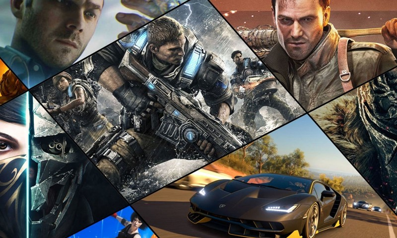

FREESTORAGE - свободный ресурс, который помогает сохранять свободный интернет в эпоху подписок.
В данном ресурсе вы можете найти интересный софт для ваших компьютеров и гаджетов, игры и небольшую библиотеку литературы.
Весь материал, распространяемый на данном сайте является безопасным и проверенным на наличие вредоносного ПО.
Приятного времяпровождения!